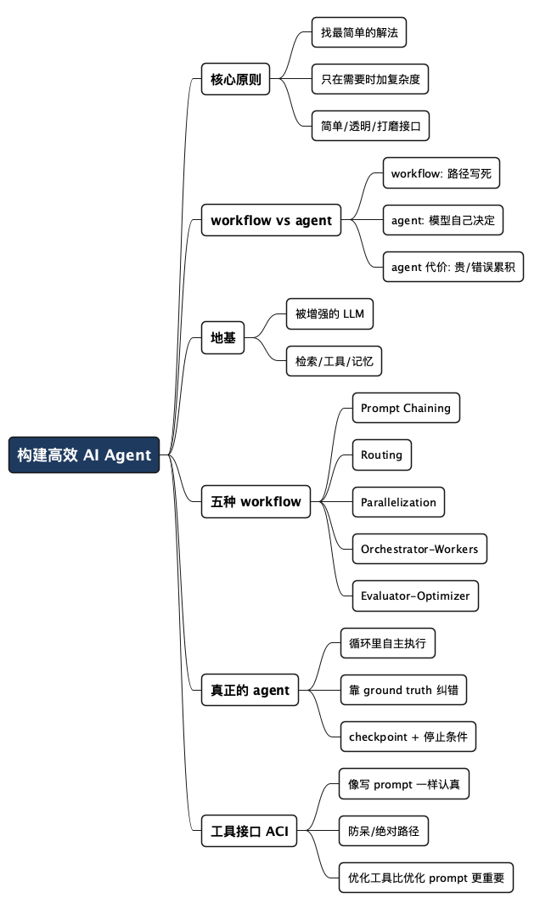

重读《Building Effective Agents》：怎么才算构建了一个"高效"的 AI Agent
Posted on 日 02 8月 2026 in AI
| Abstract | 重读《Building Effective Agents》：怎么才算构建了一个"高效"的 AI Agent |
|---|---|
| Authors | Walter Fan |
| Category | learning note |
| Version | v1.0 |
| Updated | 2026-08-02 |
| License | CC-BY-NC-ND 4.0 |
重读《Building Effective Agents》：怎么才算构建了一个"高效"的 AI Agent
去年年底 Anthropic 发了篇 Building Effective Agents，我隔一阵就翻一遍。原因很简单：这一年里"Agent"这个词被炒得越来越玄，什么"自主智能体""多智能体协作""AGI 前夜"，一堆框架也跟着冒出来，动不动就是几十个抽象层。可真到自己动手做一个能上线、能维护的东西时，我发现最管用的，反而是这篇文章里那几个朴素得不能再朴素的模式。
程序员大多有个习惯，一件事没弄明白就搁不下。我第一次读只记住了那张"augmented LLM"的图，第二次读才琢磨过味来——这篇文章真正想说的，其实是一句劝告：别一上来就上 agent。大部分号称"我们做了个 Agent"的项目，拆开看要么是几次带工具的 LLM 调用串起来，要么是一段写死的流程，压根不需要那么"智能"。
这篇是我重读后的笔记。看完你能带走三样东西：一套区分 workflow 和 agent 的判断标准、五种常用模式各自的适用场景、以及一份"要不要上 agent"的自查清单。
- 不是什么：这篇不吹某个框架，也不教你怎么调 API 参数。
- 是什么：这是一份"选型指南"——面对一个需求，怎么用最小的复杂度把它解决掉。
术语先垫一句：Agent（智能体）这词在业界定义很乱。Anthropic 把所有"用 LLM 加工具去干活"的系统统称为 agentic system（智能体系统），再往下分成两类——workflow（工作流）是流程写死在代码里的，agent 是让模型自己决定下一步怎么走的。下面反复用到这个区分。
一、先分清楚：workflow 和 agent 不是一回事
这是全文最值钱的一个区分，我第一次读就是没抓住它，走了不少弯路。
- Workflow（工作流）：LLM 和工具的调用路径是你用代码写死的。第一步干什么、第二步干什么、什么条件下走哪个分支，全是预先定好的。模型只是在每一步里干一件具体的小活。
- Agent（智能体）：模型自己决定接下来调什么工具、走哪条路、什么时候算干完。你给它目标和一套工具，剩下的它自己在一个循环里边看反馈边推进。
打个不太严谨但好懂的比方：workflow 像一条流水线，每个工位干什么是工程师排好的，工件从头走到尾；agent 更像你雇了个靠谱的实习生，交代清楚要什么、给他一堆权限和工具，然后让他自己想办法搞定，中间遇到坎再来问你。
流水线可预测、可控、便宜；实习生灵活、能应付意外，但更贵、也可能把事情搞砸。 这一句基本就决定了后面所有的选型。
为什么这个区分这么重要？因为agent 的自主性是有代价的——延迟更高、token 烧得更多、还会"错误累积"（第一步判断偏了，后面越走越歪）。文章里反复强调一个原则，我把它抄在这：
找到最简单的解法，只在确实需要时才增加复杂度。
很多时候，一次优化良好的 LLM 调用，配上检索（RAG）和几个 in-context 示例，就足够了。你可能根本不需要什么"agentic system"。
二、地基：被增强的 LLM(The Augmented LLM)
所有 agentic system 的基本积木，是一个"被增强过的 LLM"。所谓增强，就是给光秃秃的模型接上三样东西：
- 检索（Retrieval）：让模型能自己生成查询、去外部知识库捞资料。
- 工具（Tools）：让模型能调 API、执行代码、操作外部系统。
- 记忆（Memory）：让模型能决定哪些信息要留着、跨轮次带着走。
关键不在于"接了多少"，而在于两点：一是把这些能力裁剪到贴合你的具体场景，二是给模型一个清晰、文档完善的接口。这里可以用 MCP（Model Context Protocol）去对接第三方工具生态——我之前专门写过一篇 《MCP 还是 CLI》掰扯这块，这里不展开。
后面讲的所有模式，都默认每次 LLM 调用手里都握着这几样增强能力。
三、五种 workflow 模式：从简单到复杂
Anthropic 把生产环境里常见的模式，按复杂度从低到高排了个序。我用一张表先立住，再逐个讲什么时候用。
| 模式 | 一句话说清 | 什么时候用 |
|---|---|---|
| Prompt Chaining（提示链） | 把任务拆成固定的几步，一步的输出喂给下一步 | 任务能干净地拆成固定子步骤 |
| Routing（路由） | 先分类，再把输入分发给专门的处理分支 | 输入有明显不同的类别，分开处理更好 |
| Parallelization（并行） | 同时跑多个子任务，或同一任务跑多遍再聚合 | 子任务互相独立，或需要多视角提高置信度 |
| Orchestrator-Workers（编排者-工人） | 一个中枢 LLM 动态拆任务、派给工人、再汇总 | 子任务数量和内容事先无法预测 |
| Evaluator-Optimizer（评估-优化） | 一个 LLM 生成，另一个 LLM 打分反馈，循环打磨 | 有清晰评价标准，且迭代确实能提升质量 |
1. Prompt Chaining：把大任务切成流水线
最简单的模式。把一个任务拆成一串固定步骤，每一步的 LLM 调用处理上一步的输出。你还能在中间加"关卡（gate）"——用代码检查一下中间结果对不对，不对就拦下来。
它的本质是拿延迟换准确率：把一个难任务切成几个简单任务，每一步模型都干得更稳。
典型场景：先写一段营销文案，再翻译成另一种语言；或者先写文档大纲，用代码校验大纲符合要求，再照着大纲写正文。
2. Routing：先分诊，再对症下药
先给输入分个类，再分发到专门的下游处理。好处是"分而治之"——每个分支都能用高度专门化的 prompt。要是不分，你为了照顾一种输入去优化 prompt，往往就伤了另一种输入。
典型场景：客服系统里，把"普通咨询/退款请求/技术支持"分流到不同的处理流程和工具；或者把简单常见的问题路由给便宜的小模型（比如 Claude Haiku），把疑难杂症留给更强的大模型（比如 Claude Sonnet），省钱又保效果。
3. Parallelization：并行干活，聚合结果
让多个 LLM 同时干，再用代码把结果汇总。它有两个变体：
- Sectioning（切块）：把任务切成互相独立的子任务并行跑。比如做内容护栏（guardrail），一个模型实例处理用户请求，另一个专门筛查内容是否违规——分开干，比让同一次调用又管审核又管回答，效果好得多。
- Voting（投票）：同一个任务跑多遍，拿多份不同的结果。比如让好几个不同的 prompt 去审同一段代码有没有漏洞，谁发现问题就报出来；或者用多个 prompt、不同的票数门槛去判断内容是否违规，平衡误报和漏报。
一个反直觉但很实用的经验：任务里有多个考量维度时，让每个维度由单独的 LLM 调用去处理，通常比塞给一次调用一起处理要好——模型能把注意力集中在一件事上。
4. Orchestrator-Workers：中枢动态派活
一个中枢 LLM（orchestrator）动态地把任务拆开，派给若干工人 LLM（workers），最后再把结果综合起来。
它跟并行看着像，关键差别在灵活性：并行的子任务是你事先切好的，而这里的子任务是编排者根据具体输入临时决定的。
什么时候用？当你事先没法预测需要哪些子任务的时候。最典型的就是写代码：改一个需求要动几个文件、每个文件怎么改，完全取决于任务本身，写死不了。搜索类任务也一样——要从哪些来源、捞哪些信息，得边看边定。
说句题外话，你现在用的 Claude Code、Cursor 这类 AI 编程工具，底层很大程度上就是这个模式的实现。
5. Evaluator-Optimizer：生成-评审的循环
一个 LLM 负责生成，另一个 LLM 负责评估和给反馈，两者在循环里一来一回，把结果越打磨越好。
什么时候用？两个信号对上就适合：一是人能明确说出"这里该怎么改"从而让结果变好，二是 LLM 自己也能给出这种反馈。这特别像人写东西的过程——写一稿、自己挑毛病、再改一稿。
典型场景：文学翻译，译者 LLM 第一遍抓不住的语感细节，评审 LLM 能挑出来给建议；或者复杂搜索，评审 LLM 来判断"信息够不够全，要不要再搜一轮"。
四、真正的 Agent：让模型自己在循环里跑
前面五种都是 workflow——路径是你写死的。真正的 agent，是把方向盘交给模型。
它的工作方式其实不复杂：接到一个人给的指令或者跟人聊清楚需求后，模型开始自己规划、自己调工具，在一个循环里边执行边看环境反馈，直到干完或者撞到停止条件。
这里有几个我觉得最关键的点：
- 每一步都要拿到"ground truth（真实反馈）"：工具调用的结果、代码执行的输出——模型得靠这些实打实的反馈来判断自己走到哪了、走没走偏。这是 agent 能自我纠错的命根子。
- 要有 checkpoint 和停止条件：该停下来问人的时候要能停（遇到卡点、需要人判断）；为了别失控，还得设个硬性上限（比如最多循环 N 次）。
- 工具设计是重中之重:agent 说白了就是"一个 LLM 在循环里根据反馈用工具"，所以工具及其文档写得好不好，直接决定成败。文章附录里专门讲了这个，我下面单开一节。
什么时候才该上 agent? 当问题是开放式的、你没法预测要几步、也没法写死一条固定路径，而且你愿意在一定程度上信任模型的决策时。它的自主性让它特别适合在"可信环境"里规模化地干活。
代价也很实在：成本更高、错误会累积。所以 Anthropic 的建议是——在沙箱环境里充分测试，加上合适的护栏。别拿生产环境当试验田。
典型场景就是 Anthropic 自己的两个实现：解 SWE-bench编程任务的 coding agent（根据一句需求描述，自己去改一堆文件），以及 "computer use"（让模型操作电脑完成任务）。
五、别忽略的隐藏主角：工具接口（ACI）
这一节是我第二次读才真正重视起来的。文章里有句话点醒了我：
你花了多少心思去设计"人机交互界面（HCI）"，就该花同样多的心思去设计"智能体-计算机界面（ACI，Agent-Computer Interface）"。
意思是：工具的定义和文档，值得你像写主 prompt 一样认真对待。同一个操作往往有好几种表达方式——改文件可以写 diff，也可以整份重写；结构化输出可以用 markdown，也可以用 JSON。在人看来这些只是形式差异，可对模型来说难易天差地别：写 diff 得先数准改了几行才能写对块头，把代码塞进 JSON 得处理一堆转义。
几条我记下来的经验：
- 给模型留够"思考"的 token，别逼它还没想清楚就把自己写进死角。
- 格式尽量贴近模型在网上见过的自然形态——它见得多的，就写得顺。
- 消除格式"开销"：别让模型去数几千行代码的行号，别让它给代码做字符串转义。
- 把自己代入模型的处境：光看工具描述和参数，你能一眼看懂怎么用吗？看不懂，模型多半也懵。好的工具定义会带上用法示例、边界情况、输入格式要求。
- 给工具做防呆（Poka-yoke）：改改参数设计，让模型天然更难犯错。
文章里有个特别接地气的例子：他们做 SWE-bench 的 agent 时，发现模型在 agent 切出根目录后，用相对路径老出错。解决办法不是去调 prompt，而是把工具改成强制要求绝对路径——改完之后模型用得零失误。他们说，做这个 agent 时，优化工具花的时间比优化主 prompt 还多。
这段我特别有共鸣，因为自己实打实栽过一个跟头。我在给一个个人助理 agent 做天气工具时，图省事把接口设计成了一个 get_weather(city)，工具描述里就一句"获取某城市的天气"。底层其实调的是高德接口，extensions="base" 拿实时、extensions="all" 能多拿三四天的预报——但我图省事，工具里写死了只取实时那一档，返回结构里压根没有"这是实时还是预报"的字段，工具描述里也只字未提"预报"这回事。
坑就埋在这儿了。用户问"今天热不热"，没问题；可一旦有人问"明天要不要带伞"，模型照样一本正经地调这个工具，然后拿着今天的数据去回答明天的问题——而且答得特别自信，因为在它看来接口就是这么定义的，它没做错任何事。错的是我：我脑子里"实时"和"预报"分得清清楚楚，可这个区分从来没写进工具接口里，模型自然无从知晓。
这就是文章说的那句"把自己代入模型的处境"。我后来的修法也很朴素：给输入加一个明确的 mode（current / forecast），返回结构里带上 data_type 和对应的日期，工具描述里把"实时天气"和"未来 N 天预报"当成两种不同能力讲清楚。改完之后，模型问"明天"就自己去要预报了。不是模型变聪明了，是接口终于把我脑子里的那个区分，老老实实地暴露给它了。
一句话总结这个教训：你以为不言自明的业务区分，只要没写进工具的参数、返回和文档里，对模型就等于不存在。
六、落地清单：决定要不要上 Agent
把全文浓缩成一套可执行的自查。面对一个需求，从上往下问：
-
一次 LLM 调用能解决吗？ 配上 RAG 和几个示例试试。能，就到此为止，别往下走。
-
能拆成固定的几步吗？ 能，用 Prompt Chaining，中间加代码关卡校验。
-
输入有明显不同的类别吗？ 有，用 Routing 分流，顺便可以用小模型省钱。
-
子任务互相独立、或需要多个视角吗？ 是，用 Parallelization（切块或投票）。
-
子任务事先根本预测不了吗？ 是，用 Orchestrator-Workers 让中枢动态派活。
-
有清晰的评价标准、且迭代确实能提升质量吗？ 是，用 Evaluator-Optimizer 做生成-评审循环。
-
问题开放到连步数都没法预测，而且你愿意信任模型决策吗？ 到这一步，才轮到真正的 Agent 登场——记得先在沙箱里测、加护栏、设停止条件。
一句话：
能用积木搭的，就别造机器人。复杂度只在"确实能改善结果"时才加。 反例：一个客服 FAQ 就能搞定的场景，你非要上多智能体协作，那叫给自己找罪受。
七、三条核心原则，贴在墙上
文章结尾给了三条实现 agent 的核心原则，我觉得值得单独拎出来，做任何 agentic system 都适用：
- 简单（Simplicity）：保持设计简单。
- 透明（Transparency）：明确展示模型的规划步骤，让人看得见它在想什么。
- 打磨接口（ACI）：通过充分的工具文档和测试，精心设计智能体-计算机界面。
关于框架，Anthropic 的态度也很实在——框架能帮你快速起步，但往生产走的时候，别怕砍掉抽象层，回到最基础的组件上来。很多模式几行代码就能实现；你要是用框架，起码得搞清楚底下到底在干什么。"对底层的错误假设，是客户最常见的出错来源。"这句话我深有同感。
最后一句
重读这么多遍，我最大的体会是："高效的 Agent"这个说法，重点从来不在"Agent"，而在"高效"。真正高效的做法，往往是克制——先问清楚"这事到底需不需要一个 agent"，而不是急着证明"我也做了个 agent"。
在 LLM 这个领域，成功不是比谁的系统更花哨，而是比谁给自己的需求搭了对的那个系统。从最简单的 prompt 开始，用扎实的评估去优化它，只有当简单方案确实撑不住时，才一层层往上加复杂度。
说到底，这跟写代码、带项目是一个道理：能把复杂的事情做简单，才是真本事；把简单的事情做复杂，谁都会。
全文思维导图
@startmindmap
<style>
mindmapDiagram {
node {
BackgroundColor #F8F9FA
RoundCorner 10
Padding 10
FontSize 13
}
:depth(0) {
BackgroundColor #1E3A5F
FontColor white
FontSize 18
FontStyle bold
}
:depth(1) {
FontSize 15
FontStyle bold
}
:depth(2) {
FontSize 13
}
}
</style>
* 构建高效 AI Agent
** 核心原则
*** 找最简单的解法
*** 只在需要时加复杂度
*** 简单/透明/打磨接口
** workflow vs agent
*** workflow: 路径写死
*** agent: 模型自己决定
*** agent 代价: 贵/错误累积
** 地基
*** 被增强的 LLM
*** 检索/工具/记忆
** 五种 workflow
*** Prompt Chaining
*** Routing
*** Parallelization
*** Orchestrator-Workers
*** Evaluator-Optimizer
** 真正的 agent
*** 循环里自主执行
*** 靠 ground truth 纠错
*** checkpoint + 停止条件
** 工具接口 ACI
*** 像写 prompt 一样认真
*** 防呆/绝对路径
*** 优化工具比优化 prompt 更重要
@endmindmap

本作品采用知识共享署名-非商业性使用-禁止演绎 4.0 国际许可协议进行许可。 欢迎在我的个人网站 https://www.fanyamin.com 访问原文并评论。